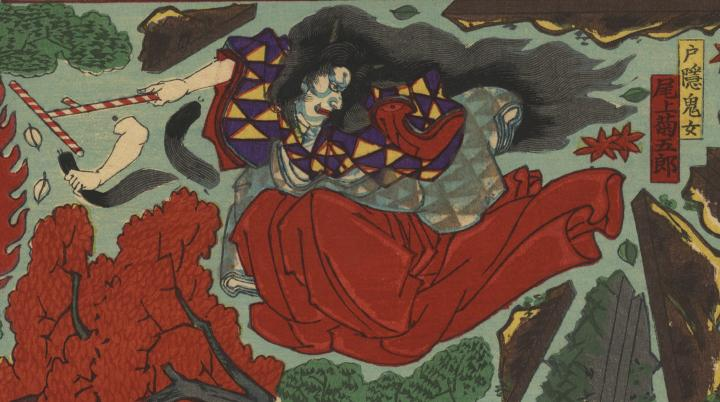

鬼女；キジョ，紅葉；モミジ

緋袴をはいた戸隠の鬼女。長い髪を振り乱して飛行している。
出典：親書誌：U426_nichibunken_0292：戸隠之鬼女退治組上三枚續；トガクシ ノ キジョ タイジ クミアゲ サンマイ ツヅキ／日付：2014／資源識別子：U426_nichibunken_0292_0001_0000
Copyright (c)2010- International Research Center for Japanese Studies, Kyoto, Japan. All rights reserved.